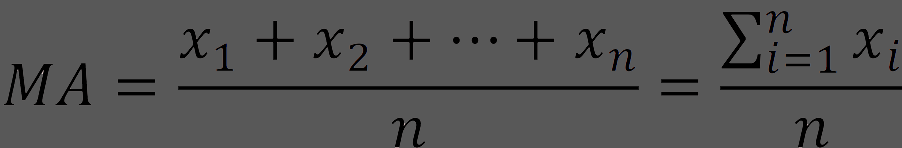
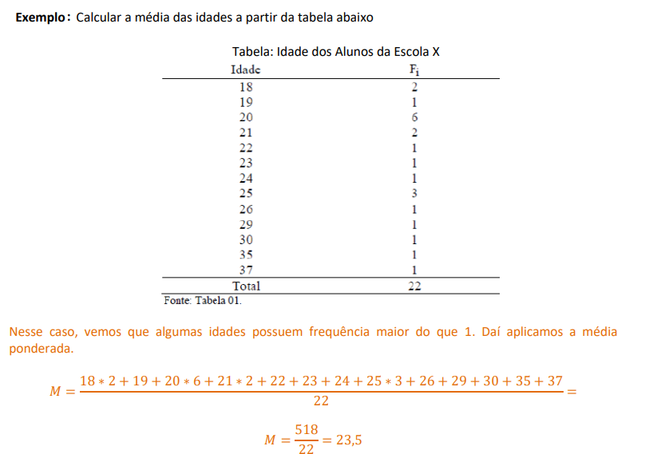
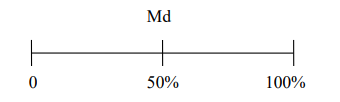

As medidas de posição ou de centralização são valores que representam uma coleção de dados. Vamos estudar a média, moda e mediana.
A média aritmética simples é o quociente entre a soma de todos os números do conjunto e a quantidade de números que há nesse conjunto.
Dados os n valores 𝑥1,𝑥2, 𝑥3, … , 𝑥𝑛 de uma variável, a média aritmética simples é o número obtido da seguinte forma:
Essa média é usada quando há valores que aparecem mais vezes no conjunto dado ou valores que possuem pesos diferentes. Assim, cada valor é multiplicado por seu peso ou frequência, depois são todos somados e, em seguida, divididos pela soma desses pesos ou frequências.
Notação: Md
Colocados os dados em ordem crescente, a mediana é o valor que divide a amostra, ou população, em duas partes iguais
 em numeros ímpares a mediana será o elemento central dos dados em ordem crescente ou decrescente. A posição da mediana é dada por n + 1 / 2 ,
já em numeros pares é somente N /2.
Notação: Mo
Denominamos moda o valor que ocorre com maior frequência em uma série de valores. Desse modo, o salário modal dos empregados de uma indústria é o salário mais comum, ou seja, o salário recebido pelo maior número de empregados. Utilizamos a moda quando desejamos obter uma medida rápida e aproximada de posição, ou quando a medida de posição deve ser o valor mais típico da distribuição.
Bom, Na minha opinião, de todos os itens listados no portfólio, Esse é o mais simples e o mais facil, calcular a média nada mais é do que somar tudo e dividir pelo numero de itens, por exemplo tenho 3 numeros, somo todos esses numeros e divido por 3, não sei mais oque comentar sobre, então é isso, Logo abaixo há um botão para voltar ao iten anterior, e o outro para ir para página inicial, onde há o sumário, a introdução e a auto avaliação, Obrigado pela atenção, Adeus!.